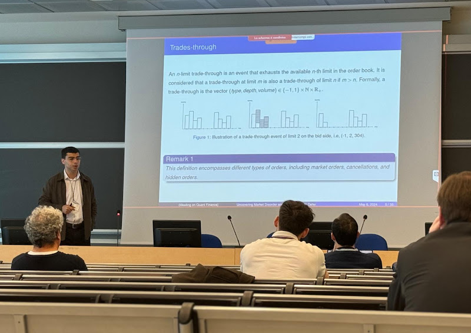

I am a postdoctoral researcher at the Centre de Mathématiques Appliquées (CMAP) at École Polytechnique, working under the supervision of Prof. Huyên Pham. My current research focuses on robust optimization and generative modeling.
News
- Oct 2026Code released for Optimal Execution with Reinforcement Learning in a Multi-Agent Market Simulator · Code
- Oct 2026Deep-MKV-TS accepted at the ACM International Conference on AI in Finance (ICAIF 2026) · arXiv
- Sep 2026Talk at the 6th International Conference on Computational Finance · Oxford, UK
- Jun 2026Talk at the 13th World Congress of the Bachelier Finance Society · Bologna, Italy
- May 2026Talk at Foundations of Multi-Agent and Mean Field Reinforcement Learning · Chicago, USA
Selected publications
Optimal Execution under Liquidity UncertaintySIAM J. Fin. Math.
I obtained my PhD in Applied Mathematics from Université Paris-Saclay, under the supervision of Prof. Etienne Chevalier and Prof. Vathana Ly Vath. My doctoral work centered on stochastic control, stochastic filtering, and disorder detection approaches in financial markets, with particular emphasis on liquidity modeling and market microstructure.